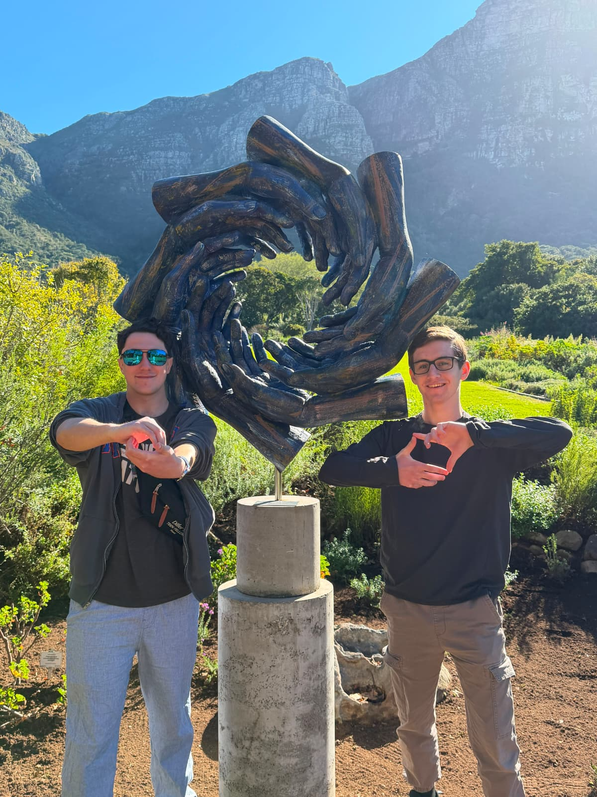

UFIC Study Abroad · University of Florida
Cape Town, South Africa
June – July 2026 · Princess Vlei Forum · AI Chatbot Design

Overview
A summer in cape town
My name is Nathan Waisserberg and in June and July of 2026 I embarked on a study abroad trip to South Africa where I was able to gain experiences that improved myself not only as a computer scientist but also as a person.
I was privileged to work with and create an AI assistant for the Princess Vlei Forum that provides easy access of information to those wishing to explore the Princess Vlei conservation site.
Special thank you to Dr. Sanethia Thomas, Ping Neo, Naomi Harrell, EDU Africa, and the Princess Vlei Forum.
